Available Assets
“Take pride in every symbol you wear for our grand empire. Cherish your weapons and armor, yes. But also take pride in every band of silk, every careful stitch, every strap of leather. We are an old empire—the greatest that Avistan has ever seen. Our touch on this continent stretches back thousands of years, before most of these other nations were even a hopeful glimmer. Each of these symbols of the empire came from some corner of our great lands, and they came to us! The empire provides for us, and we must provide for the empire in return. New lands! New resources! What we claim on this expedition will supply the next: more fine, ambitious Taldans like yourselves, in a ceaseless wave that will wash upon every shore of the globe, in turn, until every land belongs to Taldor!”
— General Gerefein, Seventh Army of Exploration
Artifacts
Mr. Smiles' Smiling Sickle
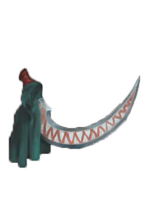A sickle wielded by Mr. Smiles III, this sickle seemed ordinary until very recently. Now, events and plots appear to be in motion, and the Sickle appears to be empowered by the secrets and ulterior motives of an unknown force.
Mr. Smiles' Smiling Sickle has revealed all of its secrets and is a +3 Stalking Sickle which acts as a divine focus for Norgorber and counts as a dagger for the purpose of slight of hand checks and sneak attacks. The wielder can use Perform (juggle) to attempt to disguise the sickle as a juggler's pin. Once per day, Mr. Smiles' Smiling Sickle can be activated to grant its wielder the benefit of greater invisibility for one minute. While under the effects of this invisibility, the wielder gains a +4 profane bonus on perception checks and a +2 profane bonus on attack rolls made with Mr. Smiles' Smiling Sickle against targets that don't know the wielder’s location. If the wielder drops or sheathes Mr. Smiles' Smiling Sickle, they immediately become visible again.
Godspike

The weapon of choice for Marjorine Sandaris, this silver spear was created as a divine weapon for the shinning crusade. Legend says the spear cut down several cursed beasts, vile cultists, and horrific undead, including many of the first ghoul spawn, though not before its bearer was afflicted by the cursed disease and had her face burned away. Marjorine was burried with this spear in a warded tomb, though she apparently rose again once the cannal waters flooded her grave and washed the wards away.
The Godspike is a +2 holy ghost-touch spear made from hardened silver and encrusted with agate stones. One third of the spear is engraved with holy symbols and prayers to Arazni from before she was turned into the Harlot Queen. One third of the Spear is engraved with holy symbols and prayers to Aroden, first of the Ascended. One third is blank.
Red Reaper
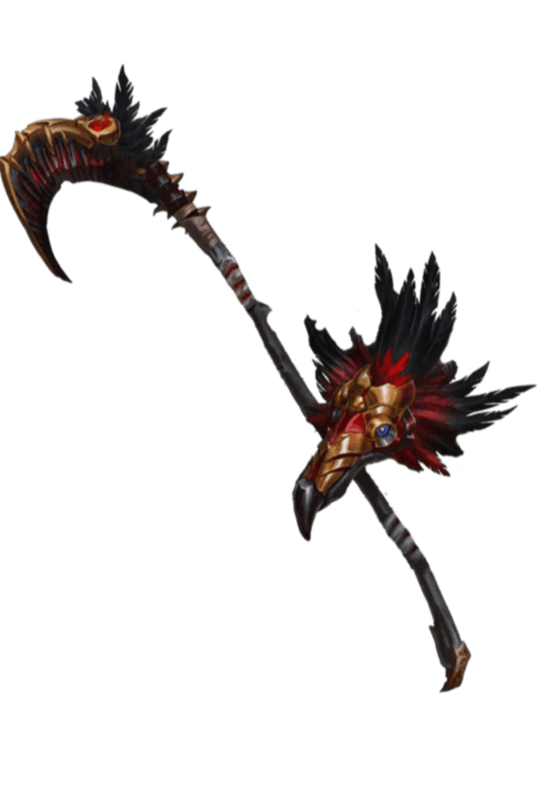The weapon created for Xan, the trusted Vanth Psychopomp in service to Pharasma, Lady of Graves. With the freedom to hunt targets of his own choosing, Xan had been using the Red Reaper to reap escaping souls on Golarion since before the Starfall.
The Red Reaper is a +1 conductive mithral scythe that counts as a Holy Symbol of Pharasma. A living creature slain or an undead destroyed by the Red Reaper cannot be returned to life, animated, or reanimated by any means except by true ressurection, miracle, or a carefully worded wish, and their soul is immediately sent to the boneyard (if it was attached to the creature when destroyed) to be judged, regardless of any prior claims upon the soul. When wielded by someone wearing Xan's Mask (which is otherwise non-magical and takes up both the eyes and head/mask slot), the wielder gains the Spirit Touch and Spiritsense (60ft.) abilities of a psychopomp. The creature wearing the Xan's Mask can also summon or dismiss the Red Reaper from its own personal demiplane as a free action. If the Red Reaper is destroyed, it reforms in its personal demiplane in 24 hours.
Long-Arm of the Law
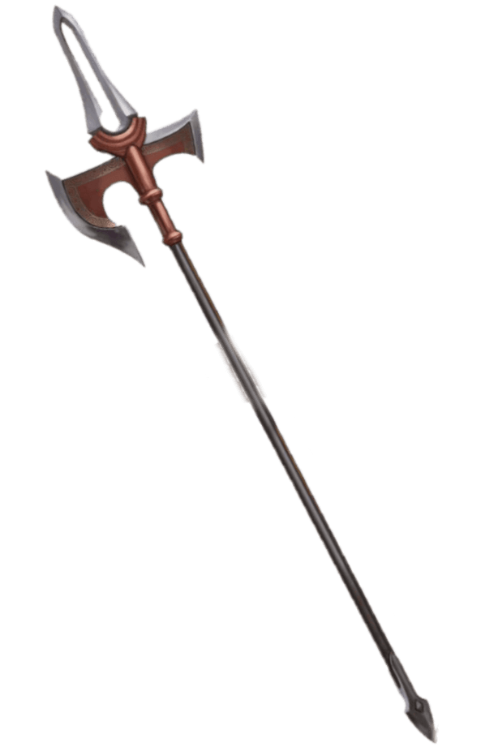The weapon created for Taldaris' service as an Inevitable, it is forged from the metal of plaques commemorating the lives of now long-dead former rulers who lived in Axis as part of their afterlife. It is infused with the echos ancient rulers and the power of the Adamantine Crucible, refined by the presence of Taldaris and the Axis Plane of Law itself.
The Long-Arm of the Law is a +3 axiomatic mithral halberd. Against any creature with a title denoting leadership of nobility (such as a baroness, chief, or lord), the Long-Arm of the Law grants a +2 bonus on attack rolls and deals an additional 1d8 damage. Against any creature recognized as an autonomous region’s head of state (such as an empress or king), the Long-Arm of the Law instead grants a +4 bonus on attack rolls, deals an additional 2d8 damage, counts as an epic weapon, and ignores any and all of the targets damage reduction. This additional damage counts as part of the weapon’s damage die. This is a kingslayer effect, and any noble or head of state affected by the additional damage and slain by this weapon cannot be returned to life by a spell or effect without the wielder’s permission or the use of a true ressurection, miracle, or a carefully worded wish.
The Long-Arm of the Law cannot be damaged or destroyed until after Taldaris is dead or striken from his office as an Inevitable, and then may only be destroyed by the fires of the Adamantine Crucible.
The Power of the Throne
These Relics and Artifacts are priceless treasures of Taldor and it's people, and assosciated with their Grand Prince. To realize the full potential of many of them, they must be bonded to their wielder or wearer in a coronation ceremony in the Imperial Palace of Taldor and made legal ruler of Taldor.
Primogen Rod
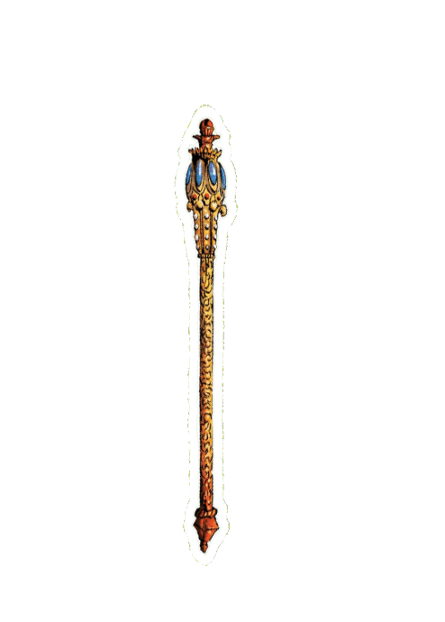A symbol of the office of the Grand Prince and rulership of Taldor, this relic has evergreen fame due to it's constant use.
The Primogen Rod is a unique rod of lordly might. Whether bonded or not, the wielder may not use the rod to attack or cast a spell on a creature that has not first attacked the wielder or their allies unless the creature is a soldier or representative of a country with which Taldor has declared war.
When held by the Bonded Grand Prince of Taldor, the wielder may treat their HD as the BAB while wielding the rod. The weapons created by this rod count as Epic and bypass all damage reduction (including DR/-). In addition, 3/day the wielder may cast spells as though modified by any or all of the wielder's metamagic feat's without using a higher level spell slot.
The Mantle of Kings
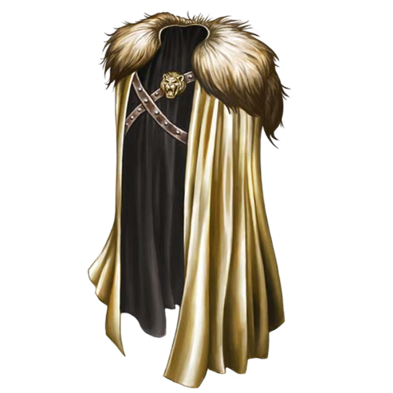Crafted by Taldaris from the hide of the legendary Grogrisant and blessed by the touch of Abadars physical hand, the Mantle of Kings is an ancient relic with a legendary power: It serves as the focus for a ritual to contact the departed First Emperor's spirit.
The Mantle of Kings is a required focus component for casting Imperial Augury. When the ritual is performed corectly and garners the attention and favor of First Emperor Taldaris, an apparition of Taldaris appears, channeling his spirit from the Great Beyond to converse with those in attendance.
When the ritual is successfully performed, an apparition of Taldaris appears, channeling his spirit from the Great Beyond to converse with those in attendance, though he focuses on addressing the primary caster's questions. In addition to providing coversation and empowering the Mantle of Kings to manifest a persons right to rule, the caster may choose to receive any two of the following: Military Advice - granting 5 ranks in Profession (soldier) to all casters for 1 week, Political Insight - granting the primary caster a +4 insight bonus on one check during the next two persona phases and the secondary casters a +2 during the same, or Taldaris' Blessing - grant one relic presented a triumph, though it cannot be used on a relic's final two abilities.
The First Emperor strongly prefers that others lead by example and not rely on him, so he is loath to answer this ritual more than once per decade; performing it again raises all DC's by 10 - 1 for every year that has passed since the last casting. If cast three or more times within a decade, the ritual automatically fails.
If Taldaris believes the wearer has the right to rule, it will glow with divine light as though it were natural daylight and a 9th level spell for 1 hour the first time the wearer donne's the Mantle of Kings within a year of an Imperial Augry is performed. This effect ends immediately if removed. Legally, only another person who donne's the Mantle of Kings and receives Taldaris' blessing may contest with another so-chosen person for the Primogen Crown.
Relics and Storied Magical Items
Relics Profile: According to our sources, Relics are powered by Taldan Zeitgeist, using their long history and the stories told about them to enhance their magic. For Relics to reach their full potential, stories must continue to be told and memories must be kept fresh. For this to happen, the Relic must be wielded, worn, or carried when doing something worth telling stories about, simply being owned or stored by someone noteworthy is not enough.
Soldiers Glory
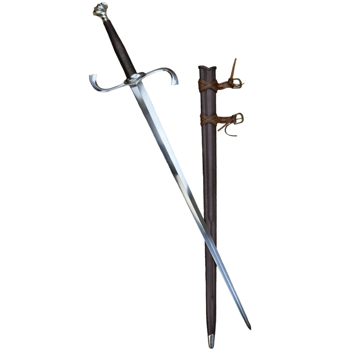Soldier's Glory is the famous blade that once served Honaria Alcasti. While he mourned his wielder's death, he refused to be interred with her. Intelligent and honorable, he refuses to be wielded by those without a noble spirit or speak to those without a courageous heart.
While some of his powers have faded with history, Soldier's Glory is an intelligent (LG, CL12, Senses [30 ft.], Ego +18, IWC 10-13-13, Empathy & Speech - Common) +4 benevolent longsword. Wielders who are neither lawful nor good must make a will save equal to 2x his ego or drop the weapon immediately. Soldier's Glory can also cast cure critical wounds 3/day and aid 1/day, but will not allow its wielder to dictate his spell usage unless they're Lawful Good. In the hands of a non-good non-lawful character, Soldier's Glory acts as a masterwork longsword. Evil characters gain one temporary negative level while wielding Soldier's Glory which cannot be overcome in any way (including spells) but is immediately restored once Soldier's Glory is no longer being wielded.
Reinvigorated by the tales of slaying the Iron Lash of Meratt, Soldier's Glory's wielder can attempt an aid-another action in combat with Soldier's Glory as a move action.
Empowered by taking the Palace of Birdsong, Soldier's Glory grants his wielder the Alertness feat while being actively wielded.
Empowered by rescuing the Twilight Child, 1/day Soldier's Glory can teleport itself into the hand of its last wielder.
Empowered by the rumors surrounding the Kithrodian Academy, Soldier's Glory has achieved his maximum potential and regained his affinity for the sky. 1/day Soldier's Glory can cast Fly on his wielder with a fly speed of 120ft. with average maneuverability for 12 minutes.
The Natural Lab of Dumos Fatomax
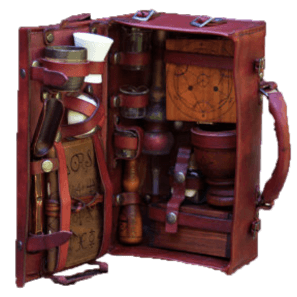The natural philosopher Dumos Fatomax believed that the powers of druids and witches could be harnessed by science and used to heal the world. He kept careful notation on the alchemical properties of a variety of herbs, and designed his own laboratory instruments to utilize green-faith techniques.
This portable alchemy lab grants a +1 competence bonus to Knowledge (nature) checks made when consulting the lab as a standard action and does not provide a competence bonus to Craft (alchemy). A user may use Knowledge (nature) in place of Craft (alchemy) and Profession (herbalist) checks while using this lab, or in place of Spellcraft while making potions. This lab also allows a user to identify potions using Knowledge (nature) even without using spells like detect magic or identify.
Dignity's Barb
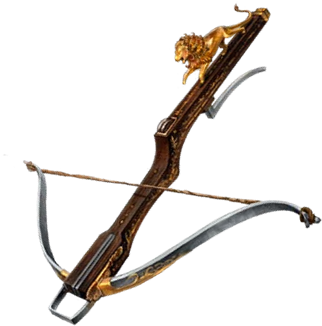Brass inlay and Taldan military symbols adorn the fine wooden stock of this +3 seeking darkwood light crossbow. The polished stock feels slightly warm to the touch when held. A golden inscription bears the name of General Gerefein of the Seventh Army of Exploration. In his most famous act, the general turned the tide of a prolonged and vicious battle with a canny Kellid warlord. Through the driving snow of a chaotic blizzard, General Gerefein shot practically blind, yet his bolt struck a lethal blow, dashing the warlord from his mount. As the Kellid soldiers watched their leader fall, they broke their charge, leaving General Gerefein the victor on that day.
Dignity's Barb is a +4 seeking darkwood light crossbow. The crossbow gives its wielder a touch of the luck that bore the general to great victories.
Reinvigorated since destroying the teleportation circle at the Palace of Birdsong, 2/day when Dignity's Barb threatens a critical hit, the wielder can roll the confirmation check twice and take the better result.
Empowered by rescuing the Twilight Child, Dignity's Barb gained the seeking quality
Empowered by the rumors surrouding the Kithrodian Academy, Dignity's Barb gained the ability to attempt a lucky shot 1/day. When a ranged weapon attack targets a creature within 30 feet of the wielder, the wielder can shoot Dignity's Barb at the projectile as an immediate action by rolling a ranged attack. If the result exceeds the attacker's roll, that attack is negated. This ability can only be used if Dignity's Barb is loaded or the wielder can use Rapid Reload or a similar ability.
Empowered by capturing Abadar's Pillar, Dignity's Barb and can roll twice to confirm all critical hits.
Empowered by the Tomb of the First Emperor, Dignity's Barb reached its maximum potential. At the start of each day, the crossbow's owner rolls a d20, rerolling any results of 1, 19, or 20 and recording the final result. For the rest of that day, when the owners rolls the recorded number on an attack roll with Dignity's Barb, the attack roll is a critical threat. This has no benefit for anyone other than the owner who rolled at the start of the day.
Envoy Ring
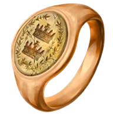This golden ring appears pristine on the outside, but the inside shows centuries of wear, leaving the inner band perpetually polished to a lighter hue than that of the ring’s outer surfaces. A family crest adorns the front, depicting olive branches encircling two crowns, seemingly indicating a house dedicated to ambassadorship and diplomacy. It has been adjusted into a unique-looking signet ring.
The ring grants its wearer a +5 competence bonus on Diplomacy, Linguistics, and Perform checks. Once per day, the wearer can speak a command word to transform their appearance and clothing, as a CL3 disguise self. The appearance of their clothing automatically matches the customs of the dominant culture around them, typically that of the local nobility or ruling class. Their physical features don’t match those of the local people but features that would make them stand out - such as elf ears in a settlement where no elves live - diminish. This lasts up to 24 hours but can be dismissed at any time.
Reinvigorated since winning hearts at the Tanager Jubilee, the ring can also be used to cast a CL3 Comprehend languages 1/day and charm person (DC17) at will, though if a creature makes its save it can't be targeted again for 24 huors.
Empowered since the capture of the Palace of Birdsong, whenever the wearer activates the ring's disguise, they can read, speak, and understand the most common language in the area that they don't already know for as long as the duration persists.
Empowered by rescuing the Twilight Child, the wearer can cast charm monster (DC20) 1/day.
Empowered by capturing Abadar's Pillar, the competence bonus provided by the Envoy Ring increased to +5.
Empowered by slaying the Harold of Norgorber, the wearer can now use mass suggestion (DC24) once per day.
Koriana's Blade
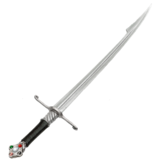When the brave knight-commander Koriana of Zimar fell within the ranks of the Fifth Army of Exploration, her remains were returned home—along with her sundered steel shield. Her brother Tadric, distraught, focused only on creating a fitting legacy for Koriana’s daughter. Devoting himself to the study of metalcraft and magical crafting, he eventually turned a shard of his sister’s shield into a protective dagger. Though records indicate that Tadric’s niece took up the sword and joined the military, her full tale and the blade’s fate were lost to history. Rumors that she went into clandestine service for the royal family still circulate.
Koriana’s Blade is a +4 defending dueling dagger. It’s strangely curved, betraying its origins, and has five gemstones in its pommel. When the wielder transfers at least 1 point of the weapon’s enhancement bonus to her AC using the defending special ability, she also chooses one creature other than herself within 10 feet to gain a +1 bonus to AC until the wielder’s next turn. This bonus is always +1, regardless of how much of the weapon’s bonus the wielder transfers to her AC.
Of its original five gemstones, the white gem in the center is intact. Once per day, the wielder can trigger this gemstone as an immediate action to absorb and negate all darts targeting them from a magic missile spell.
Empowered since reclaiming the Palace of Birdsong, the pink gem on the hilt repaird itself and can be activated once per day as an immediate action to absorb and negate one mind-affecting effect targeting them.
Empowered by rescuing the Twilight Child, the green gem repaired itself and can be activated once per day as an immediate action to absorb and negate one poison effect targeting them.
Empowered by the rumors surrounding the Kithrodian Academy, Koriana's Blade now grants a +1 insight bonus on all saving throws against effects corresponding to one of its functioning gems. Also, the black gem repaired itself and can be activated once per day as an immediate action to absorb and negate one negative energy effect targeting them.
Empowered by capturing Abadar's Pillar, Koriana’s Blade reached its maximum potential and the red gem repaired itself and can be activated once per day as an immediate action to absorb and negate one fire energy effect targeting them.
Subtle Mask
Fashioned to surround the wearer’s eyes and cover the forehead and cheekbones, this mask is made of porcelain inset with blue and green gems and decorated with golden filigree. When donned, the mask seems to disappear, leaving its golden patterns as tattoos on the wearer’s face and coloring one of the wearer’s eyes green and the other blue. The wearer can remove the mask normally, causing it to appear as a porcelain mask once again.
The wearer gains a +2 competence bonus on Sense Motive checks and can use comprehend languages once per day.
Empowered since claiming the Palace of Birdsong as a home, the wearer of the Subtle Mask can activate it as a swift action while conversing with someone or observing a conversation to detect surface thoughts (DC17) on a single participant in the conversation. This requires spending the normal number of rounds to detect surface thoughts and can be used for a total of 9 rounds per day, which do not need to be consecutive.
Empowered since rescuing the Twilight Child, the mask also detects magical effects as if using arcane sight while activating the mask. It also grants a +2 enhancement bonus to Charisma.
Empowered by the rumors surrounding the Kithrodian Academy, the mask's enhancement bonus increased to +4.
Empowered by capturing Abadar's Pillar, the mask reached its full potential and its enhancement bonus increased to +6. When the wearer activates the mask, they also detects if the target is lying as per discern lies (DC22). 1/day, the wearer can speak a command word to use true seeing.
Scion's Dagger
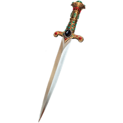This elegant, jeweled blade looks ornamental, but it is just as vicious as any weapon. A large black sapphire glitters in the dagger’s pommel, and the delicate work along the blade’s handle shows amazing artistry. The dagger was forged by Grand Prince Penticus IV to protect his son from a deal he struck with strange outsiders—trading his firstborn in order to win the crown. But Penticus V used the blade to take his own life, denying his father's benefactors their prize and securing the throne for his brother, Tralian V.
Scion's Dagger is a +3 ghost touch mithral dagger. As a full-round action, the dagger’s owner can designate up to four willing creatures in their presence as their bodyguards. As a standard action, each of these creatures can determine the owner’s location and condition, as per status, as long as the owner is holding the blade. The dagger’s owner can change the designated bodyguards as a full-round action, with each chosen creature beyond four replacing a prior choice.
If the owner of Scion's Dagger dies while carrying or wielding the blade, their body evaporates into smoke and their soul transfers into the black sapphire as per Soul Bind, except anyone holding the dagger can attempt to raise them as though they has access to their intact body. This effect fails if a soul already occupies the gem. Alternatively, a creature holding the dagger can instead speak a command word to release the trapped soul into the afterlife.
Blessed by Taldaris, 1/day, the dagger's wielder can teleport any number of their bodyguards to their location as per teleport. They must be willing and within 100 miles, and when they arrive, they appear within 20 feet of the dagger's wielder in unnocupied spaces chosen by the GM.
Empowered by slaying the Harold of Norgorber, the Scion's Dagger becomes +4. 1/day as a swift action, the wielder can gain DR 1/- and fast healing 3 for 1 minute.
Standard of Conquest

This meticulously woven flag depicts a horse and an elephant, both about to charge. The tapestry’s green and blue colors underscore the beasts’ connection to Taldor’s distinguished cavalry, the Taldan Horse, in which they have long been the most commonly used mounts. Though this particular piece of heraldry is rather rare in all reaches of the empire, those who know their Taldan military history know that this banner’s design has been used for hundreds of years.
The following effects apply only if the standard is wielded or carried, and it must be attached to the shaft of a lance, polearm, spear, staff, or similar. The standard-bearer and all allies within 60 feet who can see the banner gain a +2 morale bonus on saving throws. They also increase their base speed or fly speed and the base speed or fly speed of mounts they ride by 5 feet. This is treated as an enhancement bonus and doesn’t give a creature a base speed or fly speed if it didn’t have one already. A creature determines whether it can see the banner for the purposes of speed increase at the start of its turn, and it keeps the extra speed even if it moves out of sight later in that turn.
1/day when the wielder begins a charge action, the standard bearer can use a swift action to call for a battle charge, causing the speed increase from the standard to become 20 feet for 1 round. Any affected creature that charges during this round also ignores the penalty to AC from its charge.
Empowered by rescuing the Twilight Child, 1/day the standard bearer can now activate the banner to teleport themselves and up to five allies who are within 10 feet of them. This functions as dimension door, and each transported creture must arrive within 10 feet of the standard of conquest.
Empowered by the rumors surrounding the Kithrodian Academy, the standard bearer can now call for a battle charge 2/day and each creature affected gains a fly speed of 30 feet with average maneuverability for 1 minute.
Band of the Crusaders' Alliance
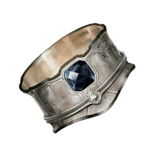Stylistic flourishes and a stout design suggest dwarves had a hand in forging this thick ring. The precise engineering of the small moving parts shows the fine artistry that went into creating the item. The ring features two carved symbols that flank a faceted onyx: one resembles the flag of Taldor, and the other depicts the eye of Aroden. Each of these three elements can be activated once per day to use a certain spell: the Taldan flag for hold person (DC13), the eye of Aroden for prayer, and the onyx for stone shape.
Encircling the ring is a second metal band that rotates in place and is studded with a single diamond. If the diamond is aligned with one of the symbols, the wearer gains a +2 luck bonus on certain saving throws: saves against enchantment spells and spell-like abilities if aligned with the Taldan flag, against evil effects if aligned with the eye of Aroden, or against earth and poison effects if aligned with the onyx. Aligning the ring with a symbol is a fullround action.
Empowered by capturing Abadar's Pillar, each element can be activated one additional time each day to use a different spell: the Taldan flag for sending, the eye of Aroden for death ward, and the onyx for wall of stone.
Empowered by the Tomb of the First Emperor, each element can be activated one additional time each day to use a different spell: the Taldan flag for mass suggestion, the eye of Aroden for disrupting weapon, and the onyx for ransmute rock to mud.
The Broken Dagger of Amalon

This broken dagger has a horse-head pommel, a symbol commonly associated with House Pythareus. The tip has broken off but still floats suspended near its original location, as though bound there by a supernatural will. Anyone holding the dagger knows instinctively how many human lives the knife has ended and can feel both the anger of the murdered and the bloodlust of the knife.
The Broken Dagger of Amalon is a broken intelligent (N, Senses [30 ft.], Ego +4, IWC 10-10-10, Empathy - Common, Purpose - Slay Humans) +1 Human-Bane Dagger with a human-kill-count of: 1. Unlike ordinary broken items, the Broken Dagger of Amalon cannot be repaired or reinforced beyond 10 hp and can never have the broken condition removed. It cannot be destroyed until every member of House Pythareus and everyone that has ever killed a human with the dagger are slain. If subjected to enough damage or a magical effect that would normally cause it to be destroyed, it is rendered temporarily magically inert until 10hp worth of damage is repaired. The Broken Dagger of Amalon always grants a free sunder attempt on any targets armor when dealing critical or precision damage. Sunder attempts granted in this manner do not provoke attacks of opportunity.
Empowered by the Tomb of the First Emperor, the broken dagger gains menacing special ability and +2 ego. When using the Broken Dagger of Amalon to attack Humans, creatures wielding the dagger count as a rougue two levels higher for the purpose of dealing sneak attack damage. This grants the sneak attack ability as a second level rogue to creatures that do not ordinarily deal sneak attack damage while attacking humans.
Belt of the Taldan Aegis
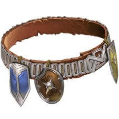Taking its name from the City of Zimar and the Walls defending it and the border of Taldor, this simple leather belt is strapped with miniature shields and plated with dozens of adamantine lamellar plates along the cord's exterior, giving it the appearance of having been forged from steel.
The Belt of the Taldan Aegis grants its wearer a +4 enhancement bonus that can be divided in increments of +1 to any of the wearer's physical ability scores. For example, the wearer can allocate everything to Constitution or split it evenly between both Strength and Dexterity. Treat this enhancement bonus as a temporary ability bonus for the first 24 hours the belt it worn. The wearer can reallocate this enhancement bonus once per day by meditating for 1 minute while wearing the belt, but doing so reverts the belt's enhancement bonus to a temporary bonus for the next 24 hours. In addition, the belt can hold up to one shield at a time, with up to one shield being attached per day as a standard action. When attaching a shield, the shield automatically miniaturizes, and provides the wearer DR 1/adamantine. Removing a shield is an immediate action, which instantly reverts the shield to its original form. Only shields of masterwork or higher quality may be attacked.
Empowered by capturing Abadar's Pillar, the Belt of the Taldan Aegis can now hold up to two shields, with each granting DR 1/adamantine that stacks with the DR granted by other shields on the belt. In addition, if the wearer's health is reduced below 0, the belt heals the wearer 1d8+5 per shield attached to the belt as cure light wounds. This healing will not restore the wearer to life if already slain by the same blow that reduced their health below 0. This magic consumes all the attached shields, which crumbles into non-magical dust.
Empowered by the Tomb of the First Emperor, the Belt of the Taldan Aegis can now hold up to three shields. While the belt has at least three shields attached, the wearer gains the benefit of the Endurance feat and no longer needs to eat, sleep, or drink (though they may if they so choose, and they are do not gain immunity to spells or effects that compell the wearer to eat, drink, or sleep). In addition, as an immediate action, the wearer can remove a shield while speaking the name of an ally within 60ft. to grant them the benefits of shield other except the deflection and resistance bonuses are equal to the number of shields remaining on the belt. This magic consumes the removed shield, which crumbles into non-magical dust. The shield other effect ends after 13 hours or when all the shields are removed from the belt, whichever comes first.
Empowered by slaying the Harold of Norgorber, increase its enhancement bonus to +6 and the Belt of the Taldan Aegis can now hold up to four shields. The wearer also gains a resistance bonus equal to the number of attached shields to all saving throws against persistant effects (such as poison or being on fire), but not against initial effects (such as fireball, ingesting poison, or catching on fire). In addition, as an immediate action, the wearer can remove a shield and press it against an object or construct, which repairs 5d8+13 points of damage and counts as a make whole effect and grants the object a hardness of 20 or the construct DR 10/adamantine for 10 minutes. This magic consumes the removed shield, which crumbles into non-magical dust.
Ovetrian's Plate

This stories suit of +4 rallying full plate was worn by General Ovetrian over the course of many conquests. It was recorded that General Ovetrian wore this armor when he was a part of the Fifth Army of Exploration, where he led a group into the River Kingdoms and places east. Plated in platinum with a slight wave pattern, the armor’s surface bears a resemblance to white fur. The armor’s visor is fashioned to look like a male lion’s maned head, and it is hinged so it can be either worn up or pulled down to protect the face. Stories of the general’s battles claim that entire lines of soldiers fled from the general when he rode into battle.
Once every 10 minutes, the armor’s wearer can slam the helm’s visor shut as a standard action, exposing the lion’shead design. When he does, he can attempt to demoralize all enemies within 30 feet, and he gains a competence bonus on his Intimidate check equal to the armor’s enhancement bonus to AC. Once per day, instead of attempting to demoralize enemies, he can take this action to afflict all creatures within 30 feet with fear (DC20).
Empowered by the Tomb of the First Emperor, the armors enhancement bonus grew to +4. A creature demoralized by the armor’s ability is frightened for the first round of the effect’s duration and is then shaken as normal for the rest of the duration (if any). Three times per day, the wearer of the armor can touch an adjacent ally as a standard action to affect that ally with either break enchantment or greater heroism. This ability can’t be used more than once every 10 minutes.
Empowered by slaying the Harold of Norgorber, Ovetrian's Plate becomes +5 rallying full plate. When the wearer uses the armor’s ability to demoralize enemies, he gains a morale bonus on attack rolls and damage rolls equal to the number of creatures that were demoralized. He also gains damage reduction of the same amount, which can’t be overcome. These effects last for 1 round, but if the wearer successfully hits a foe suffering from a fear effect, the duration is extended by 1 round.
Lance of the Leaping Lion
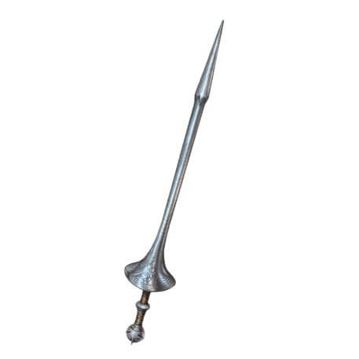The haft of this stout, ornate metal lance has an intricate pommel resembling a starburst. Affixed to its handle is a decorative counterweight engraved with the image of a Taldan knight kneeling in prayer.
This +3 glorious lance is decorated with Imperial Taldan markings, signifying its former ownership by a Grand Prince. A wielder who is proficient with both lances and longspears can wield the Lance of the Leaping Lion as either weapon, shifting between these stances as a swift action. In addition, whenever the wielder attempts an Acrobatics check to jump, they are always treated as having a running start.
Empowered by the Tomb of the First Emperor, whenever the Lance of the Leaping Lion is used to deliver a critical hit, it strikes the creature with an additional 2d10 points of sonic damage (DC22 Fortitude halves). Undead creatures and creatures sensitive to sunlight instead take 4d10 points of sonic damage.
Empowered by slaying the Harold of Norgorber, the Lance of the Leaping Lion becomes a +4 glorious lance *** the Lance of the Leaping Lion reached it's maximum potential. When used to deliver a critical hit, the lance unleashes a burst of sonic energy in a 30-foot cone, originating from the wielders square instead of only hitting the target of the critical hit. This sonic damage is otherwise identical, except that undead which are also sensitive to sunlight are denied their saving throw, and undead destroyed by sunlight are destroyed by this effect if it reduces their hp to or below 0.
Taldaris's Bequeathal
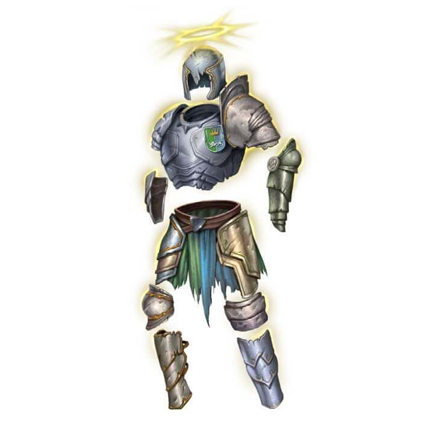This ramshackle suit of full plate looks cobbled together from old pieces scavenged from several suits of armor, each proudly displaying an insidnia of the Taldan royal family. The armor shines with a glimmer of holy light.
This suit of +2 mithral full pate is covered in dozens of markings of Taldan royal families and noble houses, and grants the wearer a relic reservoir of 1 point. By spending 1 point when gaining a morale bonus, the wearer can increase the moral bonus by 1 for the effect's duration (maximum of 24 hours). The relic reservoir regains its point once per day when the wearer meditates in quiet contemplation for 1 hour while wearing the armor, which can be done as part of an 8-hour rest. Taldaris's Bequeathal is non-magical when worn by someone not belonging to a major noble house (Noble Scion [campaign variant] feat), and it bestows 1 permanent negative level to any evil creature that wears it, which cannot be overcome in anyway while the armor is worn and disappears when the armor is removed. While constructed of metal, the armor counts as either metal or animal hide for the purpose of vows and commitments (such as a druid's). Any time the armor would gain the broken condition, a piece breaks off, and its armor bonus instead decreases by 1. The armor cannot be destroyed while it still provides an armor bonus. Destroyed pieces can be replaced with mithral or magical creature hide counterparts worth at least 1,000gp (traditionally forged by the wearer). When not worn, it can only be destroyed by removing Taldaris from all living and astral memory and subsequently seperating each piece by 100 miles.
Empowered by slaying the Harold of Norgorber, Taldaris's Bequeathal becomes a suit of +3 determined mithral full plate, its reservoir increases to 2, it becomes treated as light armor for effects and encumberance (but not proficiency), its maximum dexetrity bonus increases by 1, its armor check penalty decreses by 1, and its arcane spell failure chance is reduced by an additional 10%. The wearer is treated as having their level in ranks in Craft (armor) and as having the Master Craftsman (Craft [armor]) feat.
Tokens, Tools, and Unique Magical Items
Brass Chatterbox

This elegant clockwork cricket, molded from brass and darkwood with a key in its back, is a clever invention of Lady Martella Lotheed to deter eavesdropping.
If wound as a full-round action, this elegant cricket clicks and chirps softly for 2 minutes. Though generally too subtle to be noticed, creatures within 5 feet of the chatterbox can hear one another without difficulty, but anyone further away takes a -5 penalty on their perception checks to hear sounds within 5 feet of the chatterbox. If placed on a door, the brass chatterbox instead applies a -10 penalty on checks to hear through the door.
By making a DC20 craft (alchemy) check, a person can erase or record a message that is two minutes or shorter in length. When wound, the cricket will instead play the message, but the message cannot be heard from over 5 feet away. This still reduces eavesdropping but has no effect on doors.
Mark of the Zimar Corsairs
This piece of silver looks and spends like any other one, but its been stamped by a Zimar Corsair Captain. With the corsairs on one side, and Captain Seferi's mark on the other, it's easy to tell from whom this coin came.
This mark is valid as long as the sponsoring captain is alive and in good standing with the Corsairs. Showing this mark to a corsair will tell them you have a captain's favor, along with granting access to the grey market.
Styx Oil
Styx oil is a carefully distilled combination of antitoxin, bloodroot, id moss, and various mushrooms. Styx oil renders its target unconscious and floods every sense with erratic hallucinations, overwhelming the mind and essentially wiping away memories.
This chaotic mélange wipes away memories of the 5 minutes prior to the poison’s injection; occasionally, though, the drug fails to paralyze its victim, leaving the creature to flail violently and unpredictably in response to the hallucinations. If Styx oil is delivered by a weapon rather than injection or other subtle method, the victim gains a +5 circumstance bonus to resist the memory-erasing properties of the poison.
Type: poison, injury; Save: Fortitude DC16; Frequency: 1/minute for 2 minutes; Initial Effect: unconscious for 1d4 minutes; Secondary Effect: confusion for 2d6 rounds; Cure: 2 saves
Taldan Training Dummy
These carefully guarded Taldan military assets were originally developed by the Lion Blades shortly after their formation to facilitate in training recruits and helping agents blend more seemlessly into their enviornments. Today, they are a staple in Taldan Horse and Taldan Phalanx training facilities, as they help soldiers learn their weapons faster and make troops generally more versatile by assisting with cross-training.
Creatures can use the Taldan Training Dummy to perform rapid retraining. Once per week, a creature with an intelligence of at least 8 can use the Taldan Training Dummy to train for 1 hour, allowing them to retrain any weapon, armor, proficiency, combat manuever, style, general combat, fighter, monk, grit, panache, or bonus combat feat for another of its kind. For example, this would allow anyone to exchange Weapon Focus (spear) for Weapon Focus (longsword), Greater Trip for Improved Disarm, Rapid Shot for Cleave, or a 2nd level monk feat for another feat that was available to be chosen at that level. This does not allow someone to exchange Dodge for Extra Lay On Hands or Power Attack for Heavy Armor Proficiency, unless these feats were granted by a bonus combat feat and were both available to be chosen at that time. If learning how to use a feat associated with a specific type of weapon or armor, that weapon or armor must be used during the training. Also, creatures from a martial class (fast BAB progression) can retrain any of their class features (such as a fighter specialization), but may not use the dummy to retrain levels (such as exchanging one barbarian level for one brawler level). There is no material cost associated with any of these retrainings, but otherwise, this retraining acts like and follows all other existing retraining rules.
Once the Taldan Training Dummy has been used, it gains the broken condition and cannot be used again for this purpose until fully repaired via a casting of one or more Make Whole Spells or by an effect of similar or higher level. If the Taldan Training Dummy takes any amount of damage while broken, or any amount of fire damage, it is immediately destroyed and rendered non-magical. The training dummy has a hardness of 0 and 20hp, and is destroyed and rendered non-magical if it is ever reduced to 0. Regardless of how quickly it is repaired, it cannot be used more than once per week for rapid retraining.
Istaheq al-Bashir Halab al-Zabriti

This Kelish Thoroughbred comes from the Al-Zabriti tribe from the Padisha Empire of Kelesh, with their famously stoic horses carefully bred with genie blood. This intelligent but docile magical horse is far superior to normal horses.
This particular horse has the same statistics as an Istaheq Genie-Touched Horse and is well trained and capable of serving as a mount or animal companion. Istaheq is always combat trained and also knows the tricks deliver, stay, and work. If chosen as an animal companion or mount, Istaheq's intelligence increases to 6 and he gains the special abilities at each listed level except the 4th level ability score increase and advancement. All of Istaheq's other statistics remain unchanged until he reaches companion level 9, at which point his statistics are adjusted according to the table normally. This is because he is already, otherwise, an 8th-level companion. While serving as an animal companion, Istaheq retains his existing special abilities and remains a magical beast.
He is currently equiped with +1 Breastplate Barding, a Military Saddle, and Horseshoes of the Zephyr, and is awaiting a trained rider.
Clockwork Spy
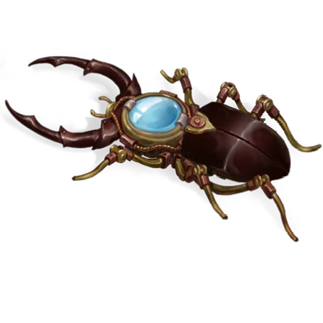Built by Lady Martella Lotheed to allow the Princess Eutropia to record conversations between her and others, lest someone try to say things were said or done contrary to fact, the Clockwork Spy has been entrusted to the group to aid them in undermining Pythareus and hopefully ending this War for the Crown.
This particular beetle-shaped clockwork spy functions just like the one in the bestiary except it also has a climb speed of 10 ft. and has been programmed to obey the Princess and anyone she designates or they designate, allowing the PC's to command it.
Seeking Lens
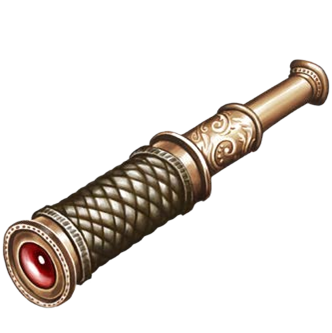This combination telescope and assayer's lenx is Nabil's own invention suited for a variety of tasks.
This telescope is adjustable as a full-round action, allowing magnifications anywhere from ×2 to ×250. The user gains a +5 competence bonus on Knowledge (geography) and Perception checks when using the device to study planets, stars, and other celestial bodies.
As a full-round action, the user can press the two lenses together, compressing the device to a small assayer’s lens small enough to occupy the eyes slot. In this form, the lens grants a +5 competence bonus on Appraise checks, Perception checks, and Survival checks to follow tracks. Once per week, after studying the possessions or tracks of a creature, the wearer may designate that creature as his quarry. This functions as the ranger’s quarry ability. If the wearer already has the quarry ability, the lens instead allows him to designate a creature as his quarry even if it is not one of his favored enemies.
Rod of Gates
This rod is symbolic of the office of Councilor of Gates in Sayashto. It functions as a Suzerain's Scepter except that in place of granting additional benefits to a PC who has the Leadership feat, it grants the wielder a +2 bonus on all Operations checks.
Ohalia's Horn
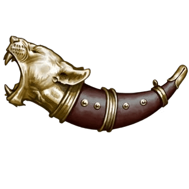The bell of this slightly curved horn resembles the head of a roaring lioness. Infused with both mortal magic and the blessing of a true Valkyrie, this horn can summon mighty warriors.
This horn functions in many ways like an Iron Horn of Valhalla, but while held in one hand, the wielder gains the benefits of deathwatch. Once per year when the wielder sounds the horn, they can summon one Sleipnir with a saddle for 1 hour in place of summoning the barbarians. The sleipneir willingly serves as a mount or combatant.
Trophies on Display
The Owl Cup
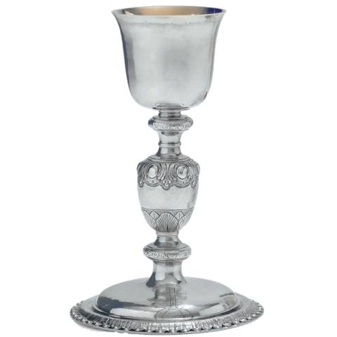This Silver Chalice is adorned with Owl Heraldry at the stem, and was awarded to Lord Rodrigo Hernandez for placing second at the Joust at the Tanager Jubilee
Value: 100gp
Head of the Iron Lash of Meratt
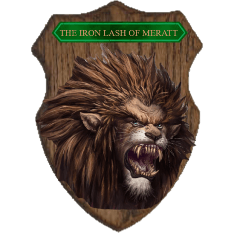This is the head of the Iron Lash, whom had terrorized the forest and farmers near the town of Lotheedar. It was slain by Lord Rodrigo Hernandez and mounted by Toby Nine-Fingers
Value: 720gp
Phalanx Mask
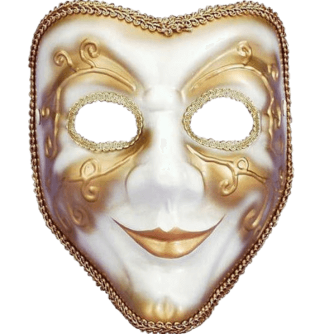This Silver and Rosewood mask was awarded to Lord Rodrigo and Dame Mai for winning the Dance of the Phalanx at the Meratt County Harvest Festival
Value: 1,250gp
Bronze Leaf

This Bronze Leaf is decorated with gold leaf, giving it a built-in pun. It was awarded to Lord Rodrigo Hernandez for placing second at the Joust at the Harvest Festival
Value: 100gp
Badges of the Fallen
These Senate Badges have lost their contigency magic and were worn by Martella Lotheeds original agents who were working indirectly for the Princess at the Exaltation Gala turned Exaltation Massacre. Having made their working relationship public, the badges of the fallen have been placed on display, while the living still keep theirs with them as a momento.
The three badges here were worn by Cross, Sir Gene Starwind, and Maid Bai Hat Ingoma. Lady Martella Lotheed, Lord Rodrigo Hernandez, and Lady Mai Vernisant still keep theirs on their person.
Value: 1,500gp
Xan's Mask
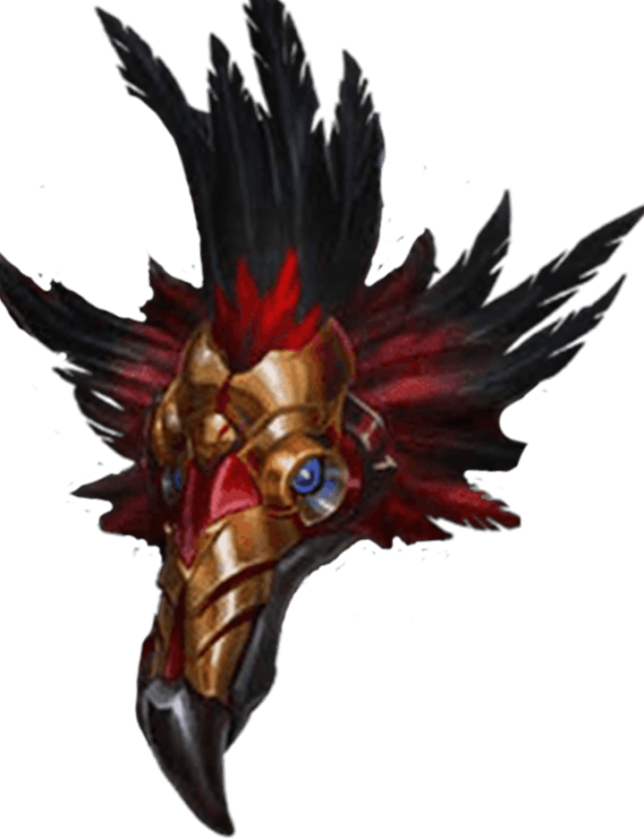This non-magical mask was worn by the Vanth Psychopomp, Xan. If/when Xan returns to full service of the Lady of Graves, this mask will crumble to meaningless dust, though on a diefic timetable, that could take eons.
Value: 2,800gp
Safehouses and Land
Click a map for fullscreen
The Silent Repository

This safehouse located within Oppara has a full alchemy lab, interrogation chamber, a master bedroom, and bunks for up to 10 agents. Located beneath a warehouse, it is relatively secure.
The Betony Estate

This full estate is located near the tributary town of Stachys. It features a garden, rooms for receiving and entertaining guests, a conservatory, a library, servant quarters, two guest rooms, five bedrooms, and a master bedroom.
This estate is currently fully repaired, and the estate and the nearby town has been granted by imeperial decree. Many of the towns outlying farmers have returned and the town is once again growing and prospering. This estate has live-in Domovoi fey named Blunk, Nodd, and Wink.
Uncollected Favors Offered and Debts Owed
- The following assets are material favors or debts:
- Duke Quintus Avellius Corcina can arrange for the import of eastern weapons and armor. This equipment can either be retrofitted for inner-sea usage (treat as martial) or can be purchased at a 10% discount. If resold, they must be sold back to him for half the purchase price.
- Marquess Tanasha Starborne can arrange access to fey boons from local fey, though she must be introduced to the friendly-fey in person.
- Maiden Atratus can grant some polymorphic power in exchange for a handmade item.
- Blunk can grant some telekinetic power in exchange for some homemade food.
- Father Basri is happy to bless the PC's or any of their property in Aroden's name, especially Arodenite artifacts and relics.
- Archbanker Lady Paril has granted permission to buy holy water and scrolls (5th level and lower conjuration [healing], law domain, remove curse, and break enchantment spells) stored in the Grand Bank of Lotheedar's scroll vault.
- Tribune Aric of Northern Tandak has promissed to support the Pc's operations with a batch of 1d4 scrolls every 1d4 weeks, with the scroll level equal to the spell level. The first batch each book is a batch of cure/ healing scrolls.
- Cincia Reviamo grants full access to the General Arnisant Museum and Historical Residence, including its records and relics - to borrow only. This allows each person to borrow a +2 undead bane weapon or a +2 undead defiant set of armor or shield. These relics are decorated with the holy symbol of Aroden, are always made of common materials (wood, leather, iron), and cannot be exotic. These must be returned upon death and cannot be sold.
- Shaper Polgrin can arrange for the import of darkleaf, darkwood, and greenwood materials and gear from the Wildwood Lodge.
- The following assets are social favors or debts:
- Grand Duke Urjinus Vobellar has invited the PC's to join him hunting in Border Wood any time they'd like (every toils/oaths [tues/thurs] days).
- Duchess Helinara Lawsus tutors in witty retorts, granting a permanent edge to Wit in all verbal duels.
- Marquess Tanasha Starborne can make arrangments for safe passage through the Verduran Forest.
- Earl Gahez Varima is happy to arrange for meetings with Keleshite contacts in areas near the Taldan - Qadiran border. These contacts can smuggle in supplies and trade goods, no-questions-asked.
- Tribune Aric of Northern Tandak has promised to toast the PC's at any party they invite him to in the future.
- Knight Remilard Kastner has sworn to aid in any righteous conflict against evil (can become cohort). He can also arrange for spellcasting services from good-aligned clerics of local churches at-cost, so long as he is with the party.
- Captain Seferi has promised free passage aboard her ship, The Tempest Maiden. She is also willing to smuggle people or cargo for the PC's including into the city of Zimar for only a small service fee.
- Master Storyteller Conson Vatherial has promised to serve as legal council for innocent people in exchange for drinks and a small retainer.